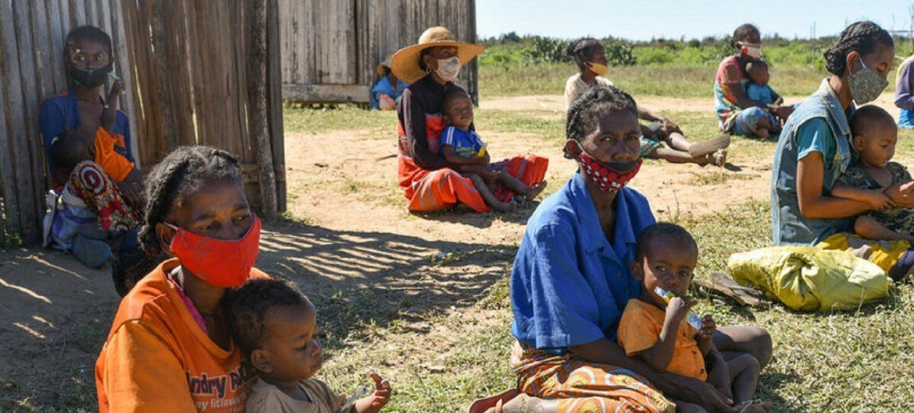

Madagascar : une grave sécheresse pourrait provoquer la 1ère famine au monde due au changement climatique

Plus d un million de personnes dans le sud de Madagascar ont des difficultés à manger à leur faim, en raison de ce qui pourrait devenir la première famine au monde causée par le changement climatique, selon le Programme alimentaire mondial (PAM).
La région a été durement touchée par des années successives de grave sécheresse, obligeant les familles des communautés rurales à prendre des mesures désespérées pour survivre. Madagascar, la quatrième plus grande île du monde, possède un écosystème unique qui comprend des animaux et des plantes que l on ne trouvent nulle part ailleurs sur la planète. Le pays connaît une saison sèche, généralement de mai à octobre, et une saison des pluies qui commence en novembre.